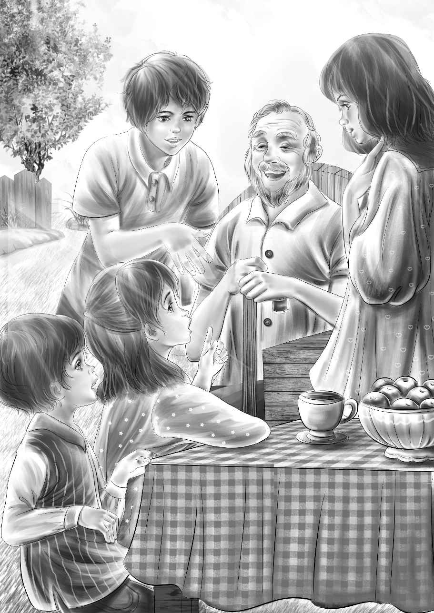

Chapter 11 A New Discovery
亨利说：“我们也好想赶快见到科尔先生啊！希望他能给我们提供一些新线索。”
“希望他比老威威的话多。”班尼说。
他们一路上有说有笑地朝科尔爷爷家走去。两个老人家正并排坐在院子里的椅子上。
“真有趣，他俩不是双胞胎却长得这么像！”杰西说，“不知道我们能不能得到些新线索。”
“报告！”班尼说，“孩子军团来报道！”
看到这些客人，两位科尔先生非常开心。“快，去拿四把椅子出来。”科尔爷爷说。
“不用啦，我们就坐在草地上好了，”杰西说，“我们顶喜欢这样呢！”不等椅子拿来，他们就席地而坐了。
“我们总算等到您了，先生！”亨利对科尔先生说，“也许您能给我们提供些新线索。”
“应该可以吧，孩子，”科尔先生说，“要知道我相当了解安迪！我还年轻的时候，安迪只是个调皮的大男孩，他长得很帅，总喜欢歪着嘴笑，他和我们这些安分守己的人不一样，老喜欢寻刺激。”

“为什么咱们的话题总是围绕着安迪转呢？”班尼问道。
“因为解开你们谜底的关键人物就是安迪呀！而且，我知道他有把火枪。”
“您也知道？”大家齐声问。
“是的，当时他偷偷拿出来给我看过。不过我不太会用那把枪，就不怎么在意。”
“安迪会用么？”维莉问。
“他也不会，所以才把枪拿到树林里去瞎鼓捣，还带了火药和火柴。结果应该是枪锈得太厉害，走火引发了火灾。而干草和叶子是最容易燃着的，因此虽然附近的农舍保住了，树却多半被烧毁了。我想安迪大概是害怕坐牢——他是一个死都不想被关起来的人，才选择了逃走。”
“但是枪却没带走。”亨利说。
“是的，他留下了枪。但这并不是我故事的重点，明白了吗？”
“基本上明白了。”亨利说，“还有件事我们希望您能知道，镇上的人都说，是一个藏在我们家的人给了安迪火枪，是这样吗？”
“无稽之谈！”科尔先生不由地提高了嗓门，“这些人一派胡言，尽自己吓唬自己。安迪跟我说过，枪是在你们的房子里找到的，但没讲具体地方，他只说‘我也发现了真相，并把它写了出来’，这是他的原话。对了，他还说‘另一头就在小木屋里。’”
“什么意思？什么叫‘另一头’？”维莉叫了起来。
“我也不知道，”科尔先生难过地说，“我现在很后悔，当时没问清楚，那时我真没把他的话当回事。”
“那我们还能向谁打听？”杰西问，“当时还有其他人在场吗？”
“对了，还有老威威，”科尔先生笑了起来，“不过你们不会从老威威那里问到什么的！”
“没错，他几乎不怎么说话。”班尼说。
“是的，他不仅话少，还有些智障，没办法，这都是天生的。不过当时他确实在场，这一点我可以确定。”
维莉说：“您认为小木屋和我们住的房子之间会不会有一条隧道？”
“应该不会，它们隔得太远了。不过换作我的话，就会到你们家的地下室好好查看一下，毕竟安迪说过，小木屋在‘另一头’。”
“我们现在就去！”亨利立刻站了起来，“您认为我们能找到谜案的线索么？”
“我觉得能。”科尔先生说，“正是发生在你们家宅子的事情才导致了谜案的发生。老宅子本身在旁人看来就是不寻常的，而安迪的失踪，更是为它蒙上了不少神秘色彩。”
“也让谜案变得更刺激啦！”班尼说。
“那是因为你有新鲜感，”科尔爷爷说，“要是住长了时间，就不会觉得刺激了。”
“万分感谢！”亨利起身告辞了，“科尔先生，您帮了我们的大忙，等我们有了新发现再来告诉您。”几个孩子迫不及待地向地下室冲去，维莉则停了一会儿，给简姑婆讲了一下事情的始末，才跟随大伙儿走下地下室。
亨利静静地站着，仔细观察着四周。他笑着问道：“班尼，你认为应该从哪里开始找？你找东西的运气一向很好！”
班尼闻言，立刻喜不自禁地回答：“土豆窖！地下室的其他地方都一目了然，只有土豆窖不是。”
“好吧！”亨利说，“那就咱们俩进去，你先进！”他帮弟弟爬进空空的土豆窖，又递了把铁锹和手电筒进去，紧接着，他拿着一把斧头也跳了下去。
杰西和维莉能看到亨利的头顶。
“你们待会儿打算怎么出来？”杰西低下头问。
“到时候给我们找个箱子当台阶吧！”亨利说，“不过现在还用不上。”
兄弟俩首先仔细查看了洞底，但除了泥土以外，什么也没有发现。于是，他们开始检查起四周的洞壁。
“墙壁是用石头砌成的，然后再在外面抹上石灰。对吧，亨利？”班尼问。
“没错，”亨利说，“不过说不定有些石头已经松动了。”
他用斧头敲击着洞壁，旋即说道：“听！这块不是石头，而是木头！”
“太酷了！”班尼兴奋地喊道，“说不定是扇小木门，石灰是涂在外面做伪装用的！”
兄弟俩轻轻敲打着木门，石灰大块大块地掉落下来。终于，木门“嘎吱嘎吱”地被打开了。
兄弟俩拿起手电筒往里照去。“是一个大洞！”班尼喊道，“和小木屋下面的洞一模一样！这就是所谓的‘另一头’！”